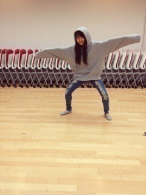
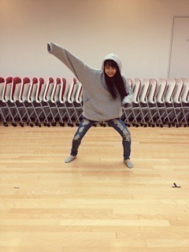
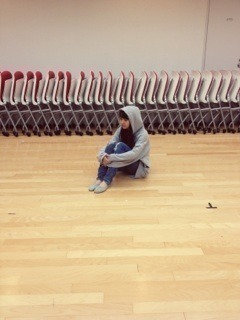
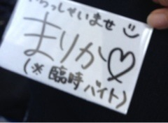
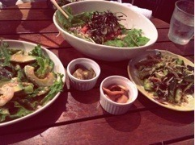
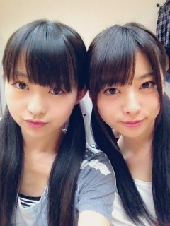

2012/1010Wed255回目*marika
いつも読んでくださってる方、
初めて読んでくださった方、
コメントしてくださった方、
ありがとうございます！
今日もレッスンがありました！
明日もあるよ！
全握レーン決まった
らりんと一緒だー！
やったー楽しいよー><
耳キーンなるわ ←
←
←私も負けんようにハキハキ握手だ。
楽しみだな♪
らりんfamilyのみなさん、
よろしくお願いします。
...

びよーん

しゃきーん

...。
(撮影 伊藤寧々)
500円のパーカーでかすぎる。
では、明日も頑張りまりか
まりか
2012/1008Mon254回目*marika
いつも読んでくださってる方、
初めて読んでくださった方、
コメントしてくださった方
ありがとうございます。
今日は4thに向けてのレッスンでした！
やっと気温も秋らしくなってきたー！
秋の空気すき。
しかしメンバー内で風邪が
流行ってきてるので気をつけなきゃ。
みなさんも風邪ひかないよう
からだあっためてくださいね><
...
学校の文化祭でね、
お手伝いしたんだ！

(勝手に作った)
久しぶりに文化祭らしいことして
すごい楽しかった ♪
♪
♪ あと、この前仲良しの友達と
ご飯食べてきた！

サラダだらけ‼笑
野菜たっぷりでヘルシー
女の子が喜ぶ
最近アボカドとトマトに
反応するようになってきた。
前は苦手だったのに...
食べられるようになったどころか
すきになった
今苦手な、貝ときのこも
いつかすきになるのかなぁ？
...
コメントありがとうございました。
全部読みました。
あたたかいです。
こんなにたくさんの方々に支えされて
私は本当に幸せなやつです。
まだ未完成です。
まだ華は小さいです。
それでも私は、
自信をもって私らしく前を向きます！
へにゃ
こんな顔するのだって、私。
まりか
2012/1008Mon253回目*marika
4thシングル選抜発表
私は選抜メンバーに入ることが
できませんでした。
3rdで初めて選抜メンバーに入って
活動してきて、知らなかった
大切なことに気づくことができて、
アンダーでいた時の考え方と
今と変わりました。
ガラッと変わりました。
3rdの期間では1000メディア等
ライブ、イベント、東京公演。
暑い夏の中、過酷な状況で
いろいろなことをしたけれど...
あっという間に時間は過ぎて
4thシングルのことが進んでいました。
忙しい中でも考える時間は
じゅうぶんありました。
あったと思います。
活動しているとき、
心の中はずっと不安でした。
次はどうなるんだろう
東京公演の結果も響くのか...
そのことばかり気にしていました。
悔しい。
でも、私に何が足りないのか
わかってきた。
慣れてないから、
初めてだから、
そんなもんで許される世界じゃない。
乃木坂でいっぱいの夏休みと一ヶ月
良い経験をしました。
...で終わらせないで、
またアンダーとして役割を見つけて
新しい自分を見つけて
磨いて磨いて、
強く、大きくなった伊藤万理華を
みなさんにみせます。
前にアンダーでいた時と
4thでと、違います。
ここは重要。
急な坂道で何度つまづいても
何度ぼろぼろになっても
辛くて泣いても
この繰り返しであったとしても
私は坂をのぼります！
みなさんの支えがある限り
私はずっと大丈夫。
***
七福神から八福神。
かなりびっくりしました...
そして、秋元真夏。
まなつ♡おかえりなさい^^
いつ復帰するのかメンバーは
ずっとずっと待っていました。
オーディションの時
バスで隣の席だったの覚えてる><！
はんなりしてるけど、
最近私のいじり方を
知ってきたみたいだ...
最後の最後に発表されて
驚いたと同時に
真夏の復帰の嬉しさ、
自分の心の中で一気に
ぐちゃぐちゃした整理できない感情が
全部出てきて涙が出ました。
絶対真夏がいちばん不安なのは
メンバーみんな知ってる。
いきなりの八福神。
何かあったら
メンバーに頼ってほしい。
全力でサポートするから。
...
うん、そうだな...
収録で発表されて、
更にそれの放送を見ると
収録後の何日間で
整理できたはずなのに、
またぐちゃぐちゃ考えちゃった。
初心を忘れない。
感謝の気持ちを忘れない。
笑顔を忘れない。
もう一度言わせてください。
私は、みなさんの支えがある限り、
ずっと大丈夫です。
まりか
2012/1006Sat252回目*marika
いつも読んでくださってる方、
初めて読んでくださった方、
コメントしてくださった方、
ありがとうございます！
私ったら最近表情筋がよく動くことっ
ほほほ♪
街はハロウィン一色だね。
ハロウィンカラーといえば
オレンジと紫と黒
この色の組み合わせすき。
モチーフもかわいんだよね♪
ジャックオランタン、魔女
コウモリ、モンスター、おばけ...
みなさんはどれがすき？
きゃりーぱみゅぱみゅさんの
ファッションモンスターのPVが
かわいくってかわいくって
最近何回も見てるんだー
...
前回のクイズ！
答えはー10人(私含め11人)
でしたー
正解した方はパチパチパチー♪
それよりさぁー
マッサージのことほめてくれたけど、
ほとんど棒だったよー
もーいじわるねー
前髪のもっさり感
きらいじゃないだろ ？
？
？では、明日も頑張りまりっかぁ！
まりか
2012/1006Sat251回目*marika
いつも読んでくださってる方、
初めて読んでくださった方、
コメントしてくださった方
ありがとうございます。
コメントに、ブログ一年目の
11月14日にいろいろ変えるほうが
キリが良いのでは？
という意見があったので...
11月14日にリニューアルするね
...
今日はレッスン前に
伊藤2でショッピングしたんだぜ。
ねねは久しぶりの
ショッピングだったみたいで
目がきらきらしてた笑
私はかわいい色のリップバーム
買って気分るんるんしてた。
あと、店員さんになぜか
「髪きれいですね」ってほめられて
嬉しかった ふふふ
ふふふ
ふふふなんか...今日暑かったですね
せっかく買った秋服がまだ着れない。

滝汗いらりんになる前よ
メイクしてるよ。
ね、似てない？
最近伊藤ちゃんず似てきてない⁇⁇
...
レッスンでみんなに
「えーまりかがメイクしてるー」
てめずしがられた
「大人でしょ？」
ってドヤッたらぽいされたよ笑
さゆりんが顔触ってくるよー
さゆりんが離してくれないときは
まいやんとかずみに助けを求める。
生駒もおさえにきて
「まりか、今の内に逃げろ！」
...イケメン
さゆりんとじゃれるの楽しいよ
口では言わないけどねっ
あ、そうだ！
今日はみさにマッサージした
ほめてほめて♪←
...
Wひなと今度一緒にどっか行くこと
約束してるんだぁ
ななみともお買い物したいね！
趣味合うの。
着てる服ゆるくてすき♪
ブログ読んだー！
ななみーどっか連れてってー
今日はメンバーの話ばっかりだ！
たまにはこういうのも良いね。
さて、何人の名前が
出てきたでしょうか！♪
乃木充
では、明日も頑張りまりか！
まりか